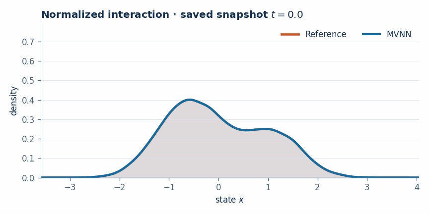
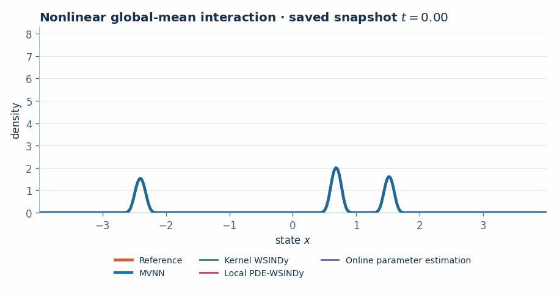
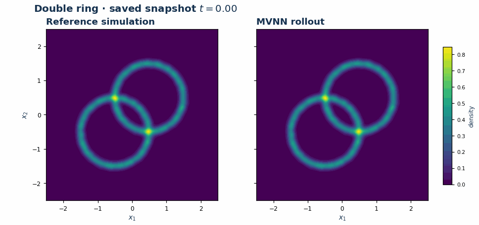
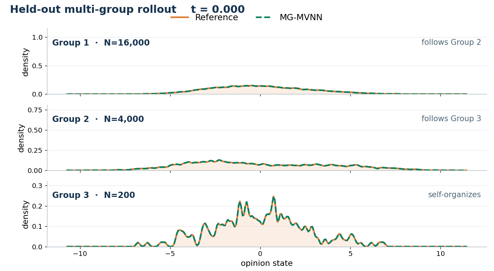
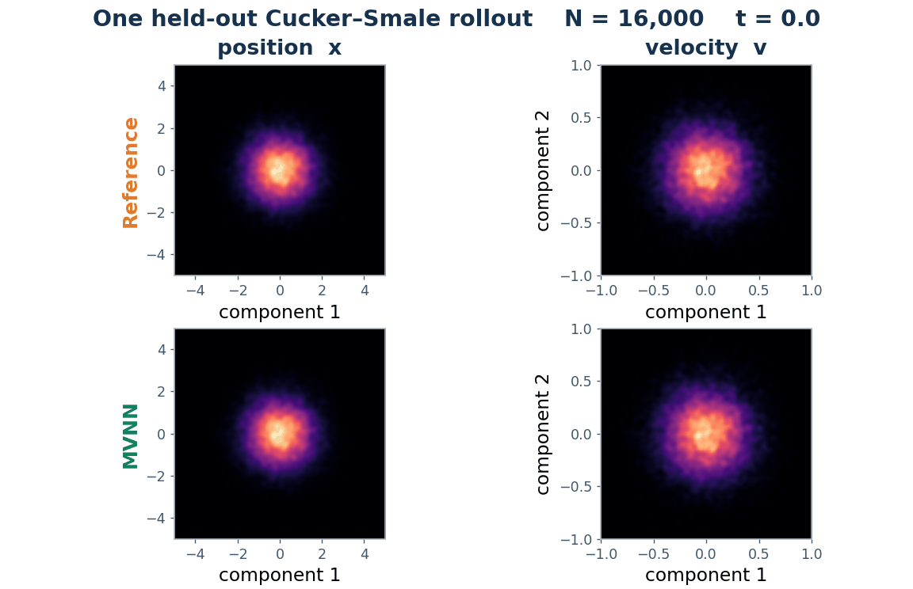
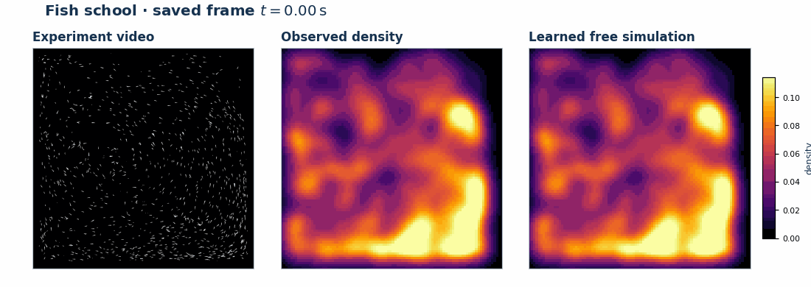
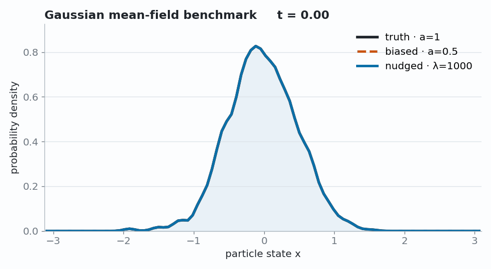
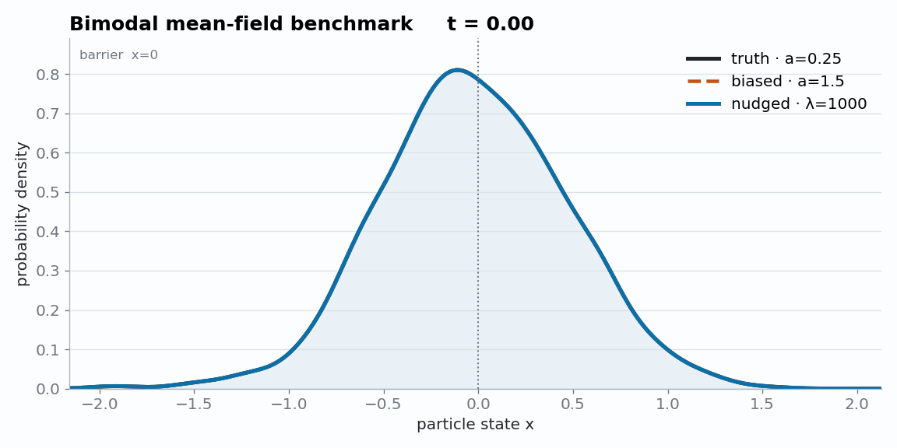
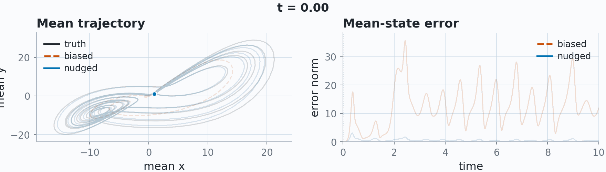
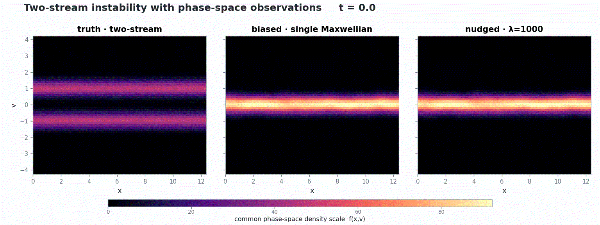

平均场动力学
从粒子到测度，
再回到粒子
平均场动力学的学习与数据同化
Liyao Lyu
中国科学技术大学（USTC）人工智能与数据科学学院
合作：Hayden Schaeffer、Xinyue Yu、David Schneidinger
中国科学技术大学（USTC）人工智能与数据科学学院
合作：Hayden Schaeffer、Xinyue Yu、David Schneidinger
Motivation
Mean-field models connect systems across science
When many similar agents interact through the population, their collective behavior is naturally described by an evolving distribution.

Collective motionbird flocks · fish schools · swarms
Crowds & transportcongestion · lane formation
Living systemscells · chemotaxis · neural populations
Social dynamicsconsensus · clustering · polarization
Kinetic physicsplasmas · particle beams
Different mechanisms, same reduction: many labeled agents \(\longrightarrow\) one evolving law \(\mu_t\).
Motivation
Mean-field reduction: discard labels, then let \(N\to\infty\)
1 · Labeled system
\(N\) interacting agents
\[
\intd \bX^i_t = \frac1N\sum_{j=1}^N K(\bX^j_t-\bX^i_t)\,\intd t + \Sigma\,\intd\bW^i_t .
\]
Discard the agent labels
2 · Measure-valued state
Keep only the empirical measure
\[
\mu_t^N=\frac1N\sum_{j=1}^N\delta_{\bX_t^j}
\]
The interaction depends on the population only through \(\mu_t^N\).
Relabeling or reordering the agents leaves the dynamics unchanged.
Let N → ∞
3 · Mean-field limit
One particle coupled to its law
\[
\intd \bX_t = \bb(\bX_t,\mu_t)\,\intd t + \Sigma\,\intd\bW_t,
\qquad \mu_t=\Law(\bX_t).
\]
Roadmap
A three-step loop from particle data to corrected forecasts
Part I
Learn
Unknown dynamics
Particle trajectories \(\longrightarrow\) \(\bb_\theta(\bx,\mu)\)
→
Model rollout
Forecast
Evolve the population
Mean-field model \(\longrightarrow\) \(N\)-particle forecast
→
Parts II–III
Correct
Forecast drift
Macroscopic data \(\longrightarrow\) particle nudging
One principle: formulate on measures; realize on particles.
I
Part I
Learning the drift from particle data
Learn \(\bb(\bx,\mu)\) directly from trajectories as a function of the population law.
Part I — learning the drift
Why learning \(\bb(\bx,\mu)\) is hard
Given by particle trajectories
Particle configurations evolving in time
The data tell us where the particles move.
→
Unknown · learn from data
\(\bb:\Rd\times\Ptwo\to\Rd\)
How the population law changes a particle's drift.
The model class must overcome three obstacles
01 · computation
Direct interactions are expensive
\(\displaystyle \bb_i=\frac1N\sum_{j=1}^{N}K(\bX_i,\bX_j),\quad i=1,\ldots,N\)
all drifts: \(O(N^2)\)
Evaluating every drift touches every particle pair.
02 · expressivity
Pairwise models are linear in the measure
\(\displaystyle \bb(\bx,\mu)=\int K(\bx,\by)\,\mu(\intd\by)\)
linear in \(\mu\)
They cannot express nonlinear many-body effects beyond additive pairs.
03 · input space
The population input is a probability measure
Standard MLP
\(F_\theta:\mathbb R^{Nd}\to\mathbb R^{Nd},\quad \bX\mapsto\mathbf b\)
fixed dimension \(Nd\) · order-sensitive
Operator learning
\(\mathcal G_\theta:\mathcal A\to\mathcal U,\quad a(\cdot)\mapsto u(\cdot)\)
function space \(\longrightarrow\) function space
Mean-field drift
\(\bb:\Rd\times\Ptwo\to\Rd\)
state + probability measure \(\longrightarrow\) drift
Part I — learning the drift
Measure-Valued Neural Network (MVNN)
Two neural networks connected by one population average: \(\bb_\theta(\bx,\mu)=\varphi_\intn\big(\bx,\ \langle\varphi_\emb,\mu\rangle\big)\).
Key idea. The population enters only through the averaged feature \(\bz_\mu\) — permutation invariant by construction, one embedding pass per particle: \(O(N)\), not \(O(N^2)\).
Part I — learning the drift · guarantees 1/3
The learned drift defines a genuine mean-field model
PropositionWell-posedness of the learned dynamics
If \(\varphi_\emb\) and \(\varphi_\intn\) are globally Lipschitz and \(f_0\in\mathcal P_2(\Rd)\), then for any \(T>0\) the learned McKean–Vlasov SDE
\[
\intd\bX^\theta_t=\bb_\theta\big(\bX^\theta_t,f^\theta_t\big)\,\intd t+\sigma\,\intd\bB_t,
\qquad f^\theta_t=\Law(\bX^\theta_t),
\]
has a unique strong solution on \([0,T]\), and \(f^\theta_t\) is the unique weak solution of the associated nonlinear Fokker–Planck equation.
Meaning: trained weights give a well-defined continuum model — no smoothing or filtering of the data is needed.
PropositionPropagation of chaos for the learned particle system
Under the same assumptions, let \((\bX^{\theta,i,N}_t)_{i=1}^N\) solve the learned \(N\)-particle system with \(f_0\)-chaotic initial data. Then for any \(T>0\) the particle law is \(f^\theta\)-chaotic:
\[
\lim_{N\to\infty}W_2\big(f^{1,\theta,N}_{[0,T]},\,f^{\theta}_{[0,T]}\big)=0 .
\]
Meaning: the \(N\)-particle simulation and the mean-field model agree as \(N\) grows — train at one \(N\), simulate at any \(N\).
Part I — learning the drift · guarantees 2/3
How expressive is the architecture?
TheoremUniversal approximation (after Pham–Warin)
Let \(\zeta\) be a probability measure on \(\Ptwo\) and \(\bb^\star:\Rd\times\Ptwo\to\Rd\) continuous with \(\|\bb^\star\|_{L^2(\zeta)}<\infty\). For every \(\varepsilon>0\) there exist \(k\in\mathbb N\) and networks \(\varphi_\emb:\Rd\to\mathbb R^k\), \(\varphi_\intn:\Rd\times\mathbb R^k\to\Rd\) such that
\[
\big\|\bb^\star-\varphi_\intn\big(\cdot,\langle\varphi_\emb,\cdot\rangle\big)\big\|_{L^2(\zeta)}\le\varepsilon .
\]
TheoremQuantitative approximation via finite-dimensional measure embeddings
Let \(f:\Omega\times U\to\mathbb R\) be Lipschitz in the state and in \(W_1\), with all measures supported in \(\Omega=[-\gamma_1,\gamma_1]^d\). Cover \(\Omega\) by \(C_\Omega=\varepsilon^{-d}\) balls, take a partition of unity \(\{\omega_m\}\) subordinate to it, and embed \(\mu\mapsto\bu=\big(\langle\omega_1,\mu\rangle,\dots,\langle\omega_{C_\Omega},\mu\rangle\big)\). Then there are coefficients \(a_k\) and ReLU networks \(q_k\) with explicit depth, sparsity and weight bounds such that
\[
\sup_{\bx\in\Omega,\,\mu\in U}\Big|f(\bx,\mu)-\sum_{k=1}^{H}a_k\,q_k(\bx,\bu)\Big|\le\varepsilon,
\qquad
H=O\Big(\big((C_\Omega+d)\,C_\Omega d\big)^{\frac{C_\Omega+d}{2}}\,\varepsilon^{-C_\Omega-d}\Big).
\]
Meaning: exactly MVNN’s form — a finite embedding of \(\mu\) feeding an interaction network — made fully constructive. But a fixed histogram-type embedding needs \(C_\Omega=\varepsilon^{-d}\) features, and \(H\) blows up accordingly: the curse of dimensionality when \(\bb\) may be an arbitrary functional of \(\mu\).
Part I — learning the drift · guarantees 3/3
Approximation rate under low-dimensional measure dependence
AssumptionFinite-dimensional measure dependency
On the family \(U\) of measures of interest, every functional is determined by \(r\) fixed feature functions:
\[
V(\mu)=G\big(\langle g_1,\mu\rangle,\dots,\langle g_r,\mu\rangle\big)\qquad\forall\,\mu\in U .
\]
Meaning: \(U\) lies on a finite-dimensional manifold inside \(\Ptwo\). Gaussians are the model case — determined by mean and covariance, \(r=d+d(d+1)/2\); flocking, consensus and aggregation are governed by a few order parameters.
TheoremApproximation rate of MVNN under the assumption
Suppose the drift depends on the measure only through the \(r\) features,
\(\bb^\star(\bx,\mu)=G\big(\bx,\langle g_1,\mu\rangle,\dots,\langle g_r,\mu\rangle\big)\) on \([0,1]^d\) with \(G\) and the \(g_i\) Lipschitz.
Then for every \(\varepsilon>0\) there are deep ReLU networks achieving
\(\sup_{\bx,\mu}\|\bb^\star-\bb_\theta\|\le\varepsilon\) with
\[
\text{depth}=O(\log\varepsilon^{-1}),\qquad
W_\intn=O\big(\varepsilon^{-(d+r)}\big),\qquad
W_\emb=O\big(\varepsilon^{-d}\big).
\]
Meaning: the embedding network learns the \(r\) order parameters instead of the \(\varepsilon^{-d}\) fixed features of the previous theorem — the complexity is governed by \(d+r\), and the curse disappears.
Part I — learning the drift · example 1/3
MVNN captures normalized interactions
\[
\dot X^i_t=\frac{\sum_{j}\phi(|X^j_t-X^i_t|)\,(X^j_t-X^i_t)}{\sum_{k}\phi(|X^k_t-X^i_t|)},\qquad \phi(r)=e^{-(r/\ell)^2},\quad \ell=0.5 .
\]
Design. The normalization makes \(\bb\) nonlinear in \(\mu\), with asymmetric weights.
Train. \(N=16{,}000\), \(M=100\), \(T=2\), \(\Delta t=10^{-2}\); random Gaussian mixtures (2–8 modes).
Test. Autonomous rollout of the full \(N\)-particle system from unseen mixtures.

- WSINDy: additive \(\int K(y-x)\,\mu(\intd y)\) — linear in \(\mu\).
- Online param. estimation: needs the true form of \(\bb\) + a good initial guess.
Part I — learning the drift · example 2/3
MVNN finds a global order parameter
\[
\intd X^i_t=\big[\gamma(M^N_t-X^i_t)+(a-\alpha (M^N_t)^2)X^i_t-\beta (X^i_t)^3\big]\intd t+\sigma\intd W^i_t,\qquad M^N_t=\tfrac1N\sum_j X^j_t .
\]
Design. The drift couples to the population through \(M_\mu\) and \((M_\mu)^2\) — quadratic in the measure.
Train. \(a=\alpha=1\), \(\beta=\gamma=0.2\), \(\sigma=0.03\), \(N=1024\); random mollifier-mixture initial laws.
Test. 36 held-out trajectories; band = three independently trained MVNNs.

| method | avg. \(W_1\) |
|---|---|
| MVNN | 0.005–0.006 |
| kernel WSINDy | 0.091 |
| local PDE-WSINDy | 0.27 |
| online param. est. | 0.18 |
Part I — learning the drift · example 3/3
Generalization in 2D: unseen initial geometries
Design. Attraction–repulsion swarm: \(\dot{\bX}^i=\frac1N\sum_j\phi(\|\bX^j-\bX^i\|)(\bX^j-\bX^i)\), \(\phi(r)=c_{\rm rep}e^{-(r/\ell_{\rm rep})^2}-c_{\rm att}e^{-(r/\ell_{\rm att})^2}\); \(N=16{,}000\).
Train. Only noisy single rings, of random radius and width.
Test. Double-ring, uniform-disk and binary asymmetric \(\mu_0\) — same law, only the initial geometry changes.

Part I — learning the drift · optional
Extend to a multi-species setup
Asymmetric three-species model
\[ \begin{aligned} \dot X_t^{i,k} &=\sum_{\ell=1}^{3}\frac{1}{N_\ell-\delta_{k\ell}} \sum_{\substack{j\\(j,\ell)\neq(i,k)}} \phi_{k\ell}\!\left(|X_t^{i,k}-X_t^{j,\ell}|\right) \left(X_t^{j,\ell}-X_t^{i,k}\right),\\[-2pt] \phi_{k\ell}(r)&=D_{k\ell}\,\psi(r/R_\ell),\qquad \psi(u)=\exp\!\left(1-\frac{1}{1-|u|^{10}}\right)\mathbf 1_{\{|u|<1\}} . \end{aligned} \] \[ D=\begin{pmatrix}5&10&0\\0&2&5\\0&0&1\end{pmatrix}, \qquad (R_1,R_2,R_3)=(1,2.5,5). \]\(D_{k\ell}\): source species \(\ell\) acts on target species \(k\); \(R_\ell\) is its interaction radius. Thus \(3\to2\to1\).
MG-MVNN. Learn \(b_{\theta,k}(x,\mu_1,\mu_2,\mu_3)\) for each species; architecture details are in the paper.
Held out. Spatially separated species with \((N_1,N_2,N_3)=(16{,}000,4{,}000,200)\).
Held out. Spatially separated species with \((N_1,N_2,N_3)=(16{,}000,4{,}000,200)\).

Part I — learning the drift · optional
Phase-space MVNN learns acceleration
MVNN learns the acceleration
\[ \dot X_t^i=V_t^i,\qquad \dot V_t^i=b_\theta\!\left(X_t^i,V_t^i,\mu^N_t\right),\qquad \mu_t^N=\frac1N\sum_j\delta_{(X_t^j,V_t^j)} . \] \[ b_\theta(x,v,\mu)= \varphi_{\rm int}\!\left( x,v,\int\varphi_{\rm emb}(y,w)\,\mu(\intd y,\intd w) \right). \]Target: \(A_\ell^i\approx(V_{\ell+1}^i-V_\ell^i)/\Delta t\).
Cucker–Smale test system
\[ \begin{aligned} \dot X_t^i&=V_t^i,\\ \dot V_t^i&=\frac1N\sum_{j=1}^N \phi\!\left(\|X_t^j-X_t^i\|\right)(V_t^j-V_t^i),\\ \phi(r)&=c_{\rm rep}e^{-(r/\ell_{\rm rep})^2} -c_{\rm att}e^{-(r/\ell_{\rm att})^2}. \end{aligned} \]\((c_{\rm rep},\ell_{\rm rep},c_{\rm att},\ell_{\rm att})=(1,0.5,0.7,2),\quad N=16{,}000\)

From learning to assimilation
A learned model still drifts

Observation: a measure
\(N\approx1{,}126\) fish; occlusions and identity dropouts make the usable observation an unlabeled KDE density.Simulation: open loop
The learned drift captures circulation initially, but bias accumulates and the free simulation loses the observed school within seconds.
Needed. Compare distributions, then nudge particles.
II
Part II
Multiscale Nudging
Compare forecasts and data as measures; correct the particles directly.
Part II — multiscale nudging
Density data have no particle labels
Given
A biased forecast + coarse density observations
Forecast: labeled particles \(\bY^i_t\). Data: the smoothed law \(K_h*\mu_t\) — unlabeled, macroscopic.
→
Wanted
A correction applied to every particle
Driven by the measure-level mismatch — no labels, no matching.
One mismatch behind all of them: the data carry no particle labels
\(\muobs\) is a permutation-invariant functional of the empirical distribution — it says where the mass is, never which particle is which. Each classical update needs those labels anyway:
- EnKF — the update is built from covariances between labeled state coordinates, so it depends on particle indexing unless identities, an ordering, or a matching rule are imposed.
- 3D/4D-Var — handles nonlinear observation operators, but fitting a coarse density means optimizing over the configurations that produce it: the lift from density back to labeled particles is highly non-unique.
- Particle filters — the importance weights are likelihoods of labeled states; weight degeneracy in high dimension on top.
- Transport / mean-field filters — feedback velocities built from a likelihood on the labeled state, not on the density.
Nudging is the exception — a simple feedback with rigorous theory, but classically formulated on labeled states and fields. Part II lifts it to the measure level.
Part II — multiscale nudging
Truth, model, and observations
True process \(\bX_t\) and model \(\bY_t\): shared noise channel, bias in the drift
\[ \intd\bX_t=\btrue(\bX_t,\mu_t)\intd t+\Sigma\intd\bW_t,\qquad \intd\bY_t=\bmodel(\bY_t,\nu_t)\intd t+\Sigma\intd\bW_t,\qquad \mathbf R:=\bmodel-\btrue . \]Smoothing kernel \(K_h(\bx)=h^{-d}K(\bx/h)\) (Gaussian), even; the bandwidth \(h\) is the resolution of the measurement device.
Case A — pixel / density observation
\[ \muobs_t(\bz)=(K_h*\mu_t)(\bz). \] Imaging, satellite products, reconstructed densities.Case B — unlabeled particle locations
\[ \muobs_t(\bz)=\tfrac1M\sum_{k=1}^M K_h\big(\bz-\bX^{\obs,k,M}_t\big). \] Tracking with dropouts, no index matching across frames.
Both cases enter the same framework through the same object, the measure \(\muobs\) — and the forecast is compared with it only after the same smoothing \(K_h\).
Part II — multiscale nudging
Nudging is a Wasserstein gradient
Misfit at the observation scale, and its first variation (\(K_h\) even \(\Rightarrow\) self-adjoint)
\[ J_{\mathrm{nud},h}(\nu,\muobs)=\tfrac12\!\int_{\Rd}\big|K_h*\nu-\muobs\big|^2\intd\bx,\qquad \phi_{\nu,h}:=\frac{\delta J_{\mathrm{nud},h}}{\delta\nu}=\widetilde K_h*\nu-K_h*\muobs,\qquad \widetilde K_h:=K_h*K_h . \]In Wasserstein geometry, the first variation gives the steepest-descent direction:
\[ \bu_{\mathrm{nud}}(\bz)=-\lambda\nabla\phi_{\nu,h}(\bz)=-\lambda\nabla\big(\widetilde K_h*\nu-K_h*\muobs\big)(\bz). \]
The same field drives the finite particles, the representative mean-field particle, and its law.
Part II — multiscale nudging · particle implementation
Compare at the density scale, correct at the particle scale
Macroscopic — observation scale \(h\)
observed data (true system): image / pixels, or unlabeled locations → KDE → \(\muobs\)
coarse-grained forecast \(K_h*\nu=\frac1N\sum_j K_h(\cdot-\bZ^j)\)
compare at scale \(h\)
residual \(r=K_h*\nu-\muobs\), misfit \(J=\tfrac12\int|r|^2\)
residual \(r=K_h*\nu-\muobs\), misfit \(J=\tfrac12\int|r|^2\)
coarse-grain — permutation invariant, cost \(O(NG)\)
Wasserstein-gradient nudge \(\;\mathbf U^i=-\lambda\nabla\big(\widetilde K_h*\nu-K_h*\muobs\big)(\bZ^i)\)
Microscopic — particle scale
forecast particles \(\{\bZ^i\}_{i=1}^N\sim\nu\)
forecast step (biased model) \(\;\bZ\leftarrow\bZ+\Delta t\,\bmodel(\bZ,\nu)+\Sigma\sqrt{\Delta t}\,\xi\), then \(L_{\rm nud}\) nudging substeps ↻ repeat
No particle matching, no model linearization, and no ensemble covariances.
Part II — guarantee 1/3
Mean-field particle dynamics are well posed
Mean-field particle dynamics
\[ \intd\bZ_t =\bmodel(\bZ_t,\nu_t)\intd t -\lambda\nabla\big(\widetilde K_h*\nu_t-K_h*\muobs_t\big)(\bZ_t)\intd t +\Sigma\intd\bW_t, \qquad \nu_t=\Law(\bZ_t). \]
Proposition 1Well-posedness
Assume. For any \(T>0\),
\[
\nu_0\in\mathcal P_2,\qquad
\|\mathbf b_s(\bz,\rho)-\mathbf b_s(\bz',\rho')\|
\le L_s\big(\|\bz-\bz'\|+W_2(\rho,\rho')\big),
\quad s\in\{\mathrm{true},\mathrm{model}\},
\]
and \(\nabla\widetilde K_h\) is globally Lipschitz; the observation force is uniformly Lipschitz in space.
Then. The assimilated McKean–Vlasov SDE has a unique strong solution on \([0,T]\). Consequently, its law \(\nu_t\) is uniquely determined.
Part II — guarantee 2/3
Finite particles converge to the mean-field law
Mean-field particle dynamics
\[ \intd\bZ_t =\bmodel(\bZ_t,\nu_t)\intd t -\lambda\nabla\big(\widetilde K_h*\nu_t-K_h*\muobs_t\big)(\bZ_t)\intd t +\Sigma\intd\bW_t, \qquad \nu_t=\Law(\bZ_t). \]Finite-\(N\) particle dynamics
\[ \nu_t^N=\frac1N\sum_{j=1}^N\delta_{\bZ_t^{j,N}}, \qquad \intd\bZ_t^{i,N} =\bmodel(\bZ_t^{i,N},\nu_t^N)\intd t -\lambda\nabla\big(\widetilde K_h*\nu_t^N-K_h*\muobs_t\big)(\bZ_t^{i,N})\intd t +\Sigma\intd\bW_t^i. \]
Proposition 2Propagation of chaos
Assume.
- \(\mathbf b_s\) is globally Lipschitz in \((\bx,W_2)\), \(s\in\{\mathrm{true},\mathrm{model}\}\), and the observation force is uniformly Lipschitz.
- \(\nabla\widetilde K_h\) is globally Lipschitz and \(\|\nabla\widetilde K_h\|_{L^\infty}<\infty\).
- The initial ensemble is \(f_0\)-chaotic, with \(f_0\in\mathcal P_2\).
Then, for every \(T>0\),
\[
W_2\!\left(\Law(\bZ^{1,N}_{[0,T]}),\Law(\bZ_{[0,T]})\right)\longrightarrow0
\qquad\text{as }N\to\infty.
\]
Part II — guarantee 3/3 · equations and assumptions
Continuous equations and tracking assumptions
Truth and assimilated density equations
\[ \begin{aligned} \partial_t\mu_t &=-\nabla\!\cdot\big(\mu_t\btrue(\cdot,\mu_t)\big) +\nabla\!\cdot(A\nabla\mu_t),\\ \partial_t\nu_t &=-\nabla\!\cdot\big(\nu_t\bmodel(\cdot,\nu_t)\big) +\nabla\!\cdot(A\nabla\nu_t) +\lambda\nabla\!\cdot\big[\nu_t\nabla(K_h*r_t)\big]. \end{aligned} \]\(r_t:=K_h*\nu_t-\muobs_t,\qquad A:=\tfrac12\Sigma\Sigma^\top.\)
Theorem 3 · assumptionsResolved observations and strong feedback
Assume.
- \(\Omega=\Tor\) and \(A\succeq\kappa I\), with \(\kappa>0\).
- Exact observations: \(\muobs_t=K_h*\mu_t\).
- \(\mu_t,\nu_t\) are classical and \(\int_\Omega(\nu_0-\mu_0)\,d\bx=0\).
- \(\btrue\) and \(\bmodel\) are globally Lipschitz in \((\bx,W_2)\).
- \(\|\bmodel\|_\infty,\|\nabla\!\cdot\bmodel\|_\infty\le B_{\rm model}\).
- \(\|\bmodel(\cdot,\rho)-\bmodel(\cdot,\eta)\|_2\le L_\mu\|\rho-\eta\|_2\).
- \(0<\underline\nu\le\nu_t\) and \(\|\mu_t\|_\infty,\|\nu_t\|_\infty\le\bar\rho\).
- For \(e_t:=\nu_t-\mu_t\), \(\|\nabla e_t-\nabla(\widetilde K_h*e_t)\|_2\le\delta(h)\|\nabla e_t\|_2\), with \(\delta(h)\to0\).
Part II — guarantee 3/3 · conclusion
Continuous evolution: \(L^2\) tracking to the model-bias floor
Theorem 3 · conclusionTracking error decays to the drift-mismatch floor
Under the assumptions on the previous slide, choose
\[
\delta(h)\le\frac{\underline\nu}{2\bar\rho},\qquad
\lambda>\frac1{\underline\nu}
\left(\frac{2C_{\rm adv}^2C_P}{\kappa}-\kappa\right),
\quad C_{\rm adv}:=B_{\rm model}+\bar\rho L_\mu.
\]
\[
V(t):=\tfrac12\|\nu_t-\mu_t\|_2^2,
\]
\[
\Delta:=\sup_{s\in[0,T]}
\|\bmodel(\cdot,\mu_s)-\btrue(\cdot,\mu_s)\|_\infty,
\]
\[
\alpha:=\frac{\kappa+\lambda\underline\nu}{C_P}
-\frac{2C_{\rm adv}^2}{\kappa}>0.
\]
\[
\boxed{\;
V(t)\le e^{-\alpha t}V(0)
+\frac{\bar\rho^{\,2}}{\alpha\kappa}\Delta^2,
\qquad 0\le t\le T
\;}
\]
\(\Delta=0\). Exponential synchronization.
\(\Delta\ne0\). Squared \(L^2\) error reaches a bias floor \(O(\Delta^2)\).
\(C_P\): zero-mean Poincaré constant.
Part II — multiscale nudging · Gaussian benchmark
Nudging corrects a misspecified interaction
Design. \(\intd X^i=-a(X^i-m_t)\intd t+\intd W^i\), with \(m_t\) the empirical mean.
Truth. \(a_{\rm true}=1\), \(X_0^i\sim\mathcal N(0,0.5)\), integrated to \(T=5\).
Model. The same SDE with the wrong coupling \(a\in\{0.5,2,5\}\); the animation shows \(a=0.5\).
Observed. The smoothed density \(K_h*\mu_t\), with \(h=0.5\).


Part II — multiscale nudging · bimodal benchmark
Nudging moves mass across the barrier
Design. \(\intd X^i=-(X_i^3-X_i)\intd t-a(X^i-m_t)\intd t+\intd W^i\): a double-well system with metastable transitions.
Truth. \(a_{\rm true}=0.25\), \(X_0^i\sim\mathcal N(0,0.5)\), integrated to \(T=5\).
Model. The same dynamics with the wrong coupling; the figure shows \(a=1.5\), which places too much mass near the barrier.
Observed. The smoothed density \(K_h*\mu_t\), with \(h=0.5\).

Part II — multiscale nudging · chaotic benchmark
Strong nudging stabilizes a chaotic mean
Truth — stochastic mean-field Lorenz system
\[
\begin{aligned}
\intd X_t^i &= \sigma_L(m_{t,y}-X_t^i)\,\intd t+\sigma\,\intd W_t^{x,i},\\
\intd Y_t^i &= [m_{t,x}(\rho-m_{t,z})-Y_t^i]\,\intd t+\sigma\,\intd W_t^{y,i},\\
\intd Z_t^i &= [m_{t,x}m_{t,y}-\beta Z_t^i]\,\intd t+\sigma\,\intd W_t^{z,i}.
\end{aligned}
\]
\(\bm m_t=N^{-1}\sum_{j=1}^N(X_t^j,Y_t^j,Z_t^j)\).
Parameters. \(N=1000\), \((\sigma_L,\rho,\beta)=(10,28,8/3)\), \(\sigma=1\).
Biased model. Replace \(\bm m_t\) by \((X_t^i,Y_t^i,Z_t^i)\): \(N\) independent Lorenz systems.
Observed. \(K_h*\mu_t\) in 3D, with \(h=0.5\); nudged run \(\lambda=1000\).

Part II — multiscale nudging · kinetic benchmark
Phase-space data recover the two streams
Design. \(\dot X^i=V^i\), \(\dot V^i=E(X^i,t)\), with \(E=-\partial_x\phi\) and \(-\partial_{xx}\phi=\rho-1\).
Truth. A perturbed two-stream law with \(\sigma=0.2\), \(u_0=1\), \(\varepsilon=0.01\), and \(\kappa=0.5\).
Model. The same Vlasov–Poisson dynamics initialized from a single Maxwellian — the velocity law is structurally wrong.
Observed. The full smoothed phase-space density \((K_h*f_t)(x,v)\).

Part II — multiscale nudging · kinetic benchmark
Nudging recovers the Landau damping rate
Design. The same one-dimensional Vlasov–Poisson dynamics, monitored through the fundamental electric-field mode \(|\hat E(\kappa,t)|\).
Truth. \(f_0\propto f_{M,1}(v)(1+\varepsilon\cos\kappa x)\), \(\varepsilon=0.5\), \(\kappa=\tfrac12\), \(x\in[0,4\pi]\).
Model. The same dynamics initialized from the unperturbed Maxwellian, \(\varepsilon=0\) — no initial spatial modulation.
Observed. The full smoothed phase-space density \((K_h*f_t)(x,v)\).

Part II — multiscale nudging · collective-motion data
Density feedback stabilizes a learned fish model
Design. Start all three runs from the same frame; integrate with \(\Delta t=0.025\,\)s, \(L_{\rm nud}=100\), and \(\lambda=1\).
Truth. TRex tracks for \(N\approx1126\) fish, with occlusions, missing detections, and inconsistent identities.
Model. The learned MVNN drift from Part I, rolled out without observation feedback.
Observed. Gaussian KDE of the unmasked detections on a \(125\times125\) grid, with \(h=2\,\)px.

III
Part III
Moment nudging for Vlasov–Poisson
Correct particles from \((\rho,\bu,T)\) without reconstructing the full phase-space law.
Part III — moment nudging
Moments determine a family, not a distribution
\[
\begin{aligned}
\partial_t f+\bv\cdot\nabla_\bx f+\bE[f]\cdot\nabla_\bv f &= Q[f],\\
\bE[f]= -\nabla_\bx\phi,\qquad -\Delta_\bx\phi &= \rho[f]-1 .
\end{aligned}
\]
PIC: \(f^{N_p}=\sum_i w_i\,\delta_{(\bX^i,\bV^i)}\) — the particles are quadrature points of one law.
Observed moment map — linear in \(f\)
\[ M_h[f](\bx):=\big(\rho_h,\bj_h,\mathcal K_h\big)[f](\bx) =\int K_h(\bx-\by)\,\big(1,\bv,\tfrac12|\bv|^2\big)f(\by,\bv)\,\intd\by\,\intd\bv . \] \[ \begin{aligned} \mathbf r[f]&:=M_h[f]-M^\obs=(r_0,\mathbf r_1,r_2),\\ J_M[f]&:=\frac{\gamma_1}{2}\|r_0\|_{L^2}^2+\frac{\gamma_2}{2}\|\mathbf r_1\|_{L^2}^2+\frac{\gamma_3}{2}\|r_2\|_{L^2}^2 . \end{aligned} \]
Moment-compatible family \(\mathcal S_h=\{f:J_M[f]=0\}\ni f^\dagger\). The data fix this family, not one distribution; feedback must therefore vanish on all of \(\mathcal S_h\).
Part III — moment nudging · feedback 1/3
Method A: weight the transport geometry
Moment residuals define a phase-space potential
\[ \Phi_M[f]:=\frac{\delta J_M}{\delta f} =\gamma_1q_0(\bx)+\gamma_2\bv\!\cdot\!\mathbf q_1(\bx) +\frac{\gamma_3}{2}|\bv|^2q_2(\bx), \quad (q_0,\mathbf q_1,q_2)=K_h*(r_0,\mathbf r_1,r_2). \]Define the metric tensor \(G_t\)
\[ G_t(\bx,\bv)=\operatorname{diag}\!\big(a_t(\bx,\bv)I_d,I_d\big), \qquad a_t=1+\frac{|\bv-\bu^\obs(\bx,t)|^2}{V_*^2}. \]\(V_*\) is a reference thermal speed. The factor \(a_t\) increases only the cost of spatial motion.
Descend \(J_M\) in that metric
\[ \begin{aligned} \bb_A&=-G_t^{-1}\nabla_{\bx,\bv}\Phi_M\\ &=\left( -\frac{\nabla_\bx\Phi_M} {1+|\bv-\bu^\obs|^2/V_*^2}, -\nabla_\bv\Phi_M \right). \end{aligned} \]Large peculiar velocity damps the position channel; the velocity channel is unchanged.
Why introduce \(G_t\)? Plain \(W_2\) leaves
\(\tfrac{\gamma_3}{2}|\bv|^2\nabla_\bx q_2\) in the position drift. Dividing that channel by \(a_t\) controls the quadratic growth, while
\(\frac{\intd}{\intd t}J_M[f_t]\le0\).
Part III — moment nudging · feedback 2/3
Method B: split residuals by direction
Keep the same quadratic mismatch, but split it
\[ J_M= \underbrace{\frac{\gamma_1}{2}\|r_0\|_{L^2}^2}_{J_M^\rho} + \underbrace{\frac{\gamma_2}{2}\|\mathbf r_1\|_{L^2}^2 +\frac{\gamma_3}{2}\|r_2\|_{L^2}^2}_{J_M^{\mathbf j,\mathcal K}}, \qquad (q_0,\mathbf q_1,q_2)=K_h*(r_0,\mathbf r_1,r_2). \]Density residual \(\rightarrow\) position
\[ \Phi_M^\rho=\gamma_1q_0(\bx), \qquad \bb_{B,\bx}=-\nabla_\bx\Phi_M^\rho =-\gamma_1\nabla_\bx q_0 . \]Particles move spatially to correct the observed density \(\rho^\obs\).
Momentum + energy \(\rightarrow\) velocity
\[ \begin{aligned} \Phi_M^{\mathbf j,\mathcal K} &=\gamma_2\bv\!\cdot\!\mathbf q_1+\frac{\gamma_3}{2}|\bv|^2q_2,\\ \bb_{B,\bv} &=-\nabla_\bv\Phi_M^{\mathbf j,\mathcal K} =-\gamma_2\mathbf q_1-\gamma_3\bv q_2 . \end{aligned} \]Velocity translations correct momentum; velocity scaling corrects kinetic energy.
No metric tensor is needed. Method B uses plain \(W_2\), but the energy residual never enters the position update; therefore the problematic \(|\bv|^2\nabla_\bx q_2\) term is absent.
Part III — moment nudging · feedback 3/3
Method C: penalize moments, not shape
Why full relative entropy is too strong
Let \(\pi^\obs=\mathcal M_{\rho^\obs,\bu^\obs,\Theta^\obs}\) and let \(\mathcal M[f]\) be the Maxwellian with the same \((\rho_h,\bu_h,\Theta_h)\) as \(f\).
\[
\operatorname{KL}(p\|q)
:=\int\!\left(p\log\frac pq-p+q\right)\ge0 .
\]
\[
\operatorname{KL}(f\|\pi^\obs)
=
\underbrace{\operatorname{KL}(f\|\mathcal M[f])}_{\text{unobserved shape}}
+
\underbrace{\operatorname{KL}(\mathcal M[f]\|\pi^\obs)}_{\text{moment mismatch}} .
\]
Using the full KL would keep pushing every non-Maxwellian \(f\) toward \(\pi^\obs\), even after its observed moments are correct.
Keep only the moment term
\[ J_{\rm ent}[f] :=\operatorname{KL}\!\left( \mathcal M_{h,\varepsilon}[f]\, \middle\|\, \pi^\obs_\varepsilon \right), \quad \Theta_h=T_h+\varepsilon,\quad \Theta^\obs=T^\obs+\varepsilon . \]\(J_{\rm ent}=0\) exactly when \((\rho_h,\bu_h,T_h)=(\rho^\obs,\bu^\obs,T^\obs)\): the whole moment-compatible family remains a zero set.
Weighted-Wasserstein feedback
\[ \begin{aligned} \bb_{C,\bx} &=-\gamma\frac{\nabla_\bx\Psi_\varepsilon} {1+|\bv-\bu^\obs|^2/V_*^2}, \qquad \Psi_\varepsilon=\frac{\delta J_{\rm ent}}{\delta f},\\ \bb_{C,\bv} &=-\gamma K_h*\!\left[ \frac{\bv-\bu^\obs}{\Theta^\obs} -\frac{\bv-\bu_h}{\Theta_h} \right]. \end{aligned} \]
Why shape is preserved. \(\bb_{C,\bv}\) is affine in \(\bv\): it translates and rescales velocity to correct \(\bu\) and \(T\), while leaving the unresolved non-Maxwellian shape term \(\operatorname{KL}(f\|\mathcal M[f])\) unchanged.
Part III — moment nudging
All three schemes are well posed
A · Lyapunov structure
\[ \frac{\intd}{\intd t}J_M[f_t] =-\|\operatorname{grad}_G J_M\|^2\le0 . \] One mismatch, one weighted gradient flow.B · No quadratic position drift
Direction splitting removes the problematic \[ |\bv|^2\nabla_\bx(K_h*r_2) \] from the position update.C · Closed moment balances
\[ \dot{\bar{\bu}} =-\frac{\gamma}{T^\obs}\big(\bar{\bu}-\bu^\obs\big). \] Affine velocity maps are shape preserving.
PropositionGlobal well-posedness for A, B and C
With Lenard–Bernstein collisions, smooth positive kernels and observations, and finite initial second moment, the \(N_p\)-particle SDE has a unique global strong solution for every method \(a\in\{A,B,C\}\) and every feedback strength.
Part III — numerical setup · 1D1V
Same temperature, different current and shape
Undriven Vlasov–Poisson–Dougherty
\(\partial_t h+v\,\partial_x h+E[h]\,\partial_v h=Q_{\mathrm D}[h].\)
\(-\partial_{xx}\phi=\rho[h]-1,\qquad E=-\partial_x\phi.\)
\(Q_{\mathrm D}[h]=\nu\,\partial_v\!\left((v-u[h])h+T[h]\,\partial_vh\right).\)
\(\rho[h]=\int h\,\mathrm dv,\qquad u[h]=\rho[h]^{-1}\!\int vh\,\mathrm dv,\qquad T[h]=\rho[h]^{-1}\!\int (v-u[h])^2h\,\mathrm dv.\)
Truth · Maxwellian current wave
\[ \begin{aligned} f_0^\dagger(x,v)&=\mathcal M_{1,u_0^\dagger(x),T_0}(v),\\ u_0^\dagger(x)&=0.25+0.8\sin(x/2),\qquad T_0=0.5. \end{aligned} \] \[ \mathcal M_{1,u,T}(v)=\frac{1}{\sqrt{2\pi T}} \exp\!\left[-\frac{(v-u)^2}{2T}\right]. \]Unit density · single Gaussian velocity shape.
Prior · shifted bimodal current wave
\[ g_0(x,v)=\tfrac12\mathcal M_{1,u_0(x)-a,\theta}(v) +\tfrac12\mathcal M_{1,u_0(x)+a,\theta}(v), \] \[ \begin{aligned} u_0(x)&=-0.25-0.3\sin(x/2+\pi/3),\\ a&=0.55,\qquad \theta=T_0-a^2=0.1975. \end{aligned} \]Same \(\rho_0=1\) and \(T_0=0.5\); wrong mean flow, amplitude, phase, and velocity-space shape.
Observed \((\rho,u,T)(x,t)\), every step
Grid \(L=4\pi,\ N_p=10^5,\ N_x=128\)
Run \(\Delta t=0.002,\ T_{\rm fin}=15,\ \nu=0.5\)
Feedback \(\gamma_{1,2,3}=\gamma=3,\ V_*=1\) (A,C)
Part III — moment nudging · 1D1V
Moment errors collapse; shape relaxes more slowly

Mean error / no assimilation
\(R_*^S(10,15)\), averaged over \(t\in[10,15]\) and three seeds.
| Method | \(R_\rho\) | \(R_u\) | \(R_T\) | \(R_f\) |
|---|---|---|---|---|
| A | 0.015 | 0.005 | 0.045 | 0.444 |
| B | 0.008 | 0.016 | 0.061 | 0.447 |
| C | 0.012 | 0.002 | 0.019 | 0.446 |
Part III — numerical setup · 2D2V
The prior reverses, shifts, and weakens the vortex
Undriven 2D2V Vlasov–Poisson–Dougherty
\(\partial_t h+\bv\!\cdot\!\nabla_\bx h+\bE[h]\!\cdot\!\nabla_\bv h=Q_{\mathrm D}[h].\)
\(-\Delta_\bx\phi=\rho[h]-1,\qquad \bE=-\nabla_\bx\phi.\)
\(Q_{\mathrm D}[h]=\nu\,\nabla_\bv\!\cdot\!\left((\bv-\bu[h])h+T[h]\,\nabla_\bv h\right).\)
\(\rho[h]=\int h\,\mathrm d\bv,\quad \bu[h]=\rho[h]^{-1}\!\int \bv h\,\mathrm d\bv,\quad T[h]=(2\rho[h])^{-1}\!\int|\bv-\bu[h]|^2h\,\mathrm d\bv.\)
Truth · Taylor–Green Maxwellian
\[ f_0^\dagger(\bx,\bv) =\mathcal M_{1,\bu_0^\dagger(\bx),0.5}(\bv), \] \[ \begin{aligned} u_{0,x}^\dagger(x,y)&=0.25+\sin x\cos y,\\ u_{0,y}^\dagger(x,y)&=-\cos x\sin y . \end{aligned} \]Mean flow \((0.25,0)\) · unit vortex amplitude · isotropic covariance \(0.5I_2\).
Prior · anisotropic Gaussian
\[ \begin{aligned} g_0(\bx,\bv) &=\frac{\exp\!\left[-\tfrac12(\bv-\bu_0)^\top \Sigma_0^{-1}(\bv-\bu_0)\right]} {2\pi\sqrt{\det\Sigma_0}},\\ \Sigma_0&=\operatorname{diag}(0.8,0.2), \end{aligned} \] \[ \begin{aligned} u_{0,x}&=-0.25-0.45\sin(x+\pi/3)\cos(y+\pi/4),\\ u_{0,y}&=\phantom{-}0.15+0.45\cos(x+\pi/3)\sin(y+\pi/4). \end{aligned} \]Wrong mean flow, phase, rotation, amplitude, and velocity anisotropy; but \(\tfrac12\operatorname{tr}\Sigma_0=0.5\), so the scalar temperature is initially correct.
Observed \((\rho,\bu,T)(x,y,t)\), every step
Grid \(N_p=2\times10^5,\ 32^2\)
Run \(\Delta t=0.002,\ T_{\rm fin}=12,\ \nu=0.5\)
Domain \([0,2\pi)^2\)
Feedback \(\gamma_{1,2,3}=\gamma=3,\ V_*=1\) (A,C)
Part III — moment nudging · 2D2V
Method A follows the vortex through relaxation

Late-time benchmark
\(R_*^S(8,12)\): mean error / no assimilation over \(t\in[8,12]\) and three seeds.
| Method | \(R_\rho\) | \(R_u\) | \(R_T\) |
|---|---|---|---|
| A | 0.293 | 0.019 | 0.039 |
| B | 0.266 | 0.027 | 0.044 |
| C | 0.393 | 0.020 | 0.032 |
Part III — numerical setup · limit case
The two-stream truth is far from equilibrium
Self-consistent 1D1V Vlasov–Poisson–BGK · no external driver
\(\partial_t h+v\,\partial_x h+E[h]\,\partial_v h=Q_{\mathrm{BGK}}[h].\)
\(-\partial_{xx}\phi=\rho[h]-1,\qquad E=-\partial_x\phi.\)
\(Q_{\mathrm{BGK}}[h]=\nu\bigl(\mathcal M[h]-h\bigr),\qquad \mathcal M[h]=\dfrac{\rho[h]}{\sqrt{2\pi T[h]}}\exp\!\left[-\dfrac{(v-u[h])^2}{2T[h]}\right].\)
\(\rho[h]=\int h\,\mathrm dv,\qquad u[h]=\rho[h]^{-1}\!\int vh\,\mathrm dv,\qquad T[h]=\rho[h]^{-1}\!\int(v-u[h])^2h\,\mathrm dv.\)
Truth · unstable two-stream state
\[ f_0^\dagger(x,v)=\frac{1}{\sqrt{2\pi}}\,v^2e^{-v^2/2} \bigl(1+0.05\cos(x/2)\bigr), \qquad \rho_0^\dagger(x)=1+0.05\cos(x/2),\quad u_0^\dagger=0,\quad T_0^\dagger=3. \]
Observed \((\rho,u,T)(x,t)\), every step
Domain \(L=4\pi,\ \alpha=0.05,\ k_0=0.5\)
Grid \(N_p=5\times10^5,\ N_x=128\)
Run \(\Delta t=0.05,\ T_{\rm fin}=30\)
Truth BGK \(\nu=0.05\)
Part III — numerical setup · limit case
Same wrong \((u,T)\), different velocity shapes
Truth: \((u_0^\dagger,T_0^\dagger)=(0,3)\).
Both priors: \((u_0,T_0)=(0.3,2)\).
Prior 1 · Maxwellian
\[ g_0^{\mathrm M}(x,v)=\mathcal M_{1,0.3,2}(v). \]Uniform in \(x\) · single-Gaussian velocity shape · no seeded density modulation.
Prior 2 · affine two-stream
\[ g_0^{\mathrm{2s}}=(\operatorname{Id}_x,A)_\# f_0^\dagger, \qquad A(v)=0.3+\sqrt{2/3}\,v . \]The seeded density modulation and two-stream velocity shape are retained.
Prior 1 BGK \(\nu=0.05\)
Prior 2 BGK \(\nu=0.01\)
Feedback unit scalings, \(V_*=1\) (A,C)
Part III — moment nudging · limit case
Prior 1 corrects the moments—but stays single-peaked

Maxwellian prior
A/B/C improve \((u,T)\), but the marginal remains single-peaked and misses the bimodal truth.Two-stream prior
A/B/C preserve the two peaks; the missing velocity-space shape was already present in the prior.Part III — moment nudging · limit case
With the right shape, Method A tracks the vortex

Observed
The moments synchronize.The feedback corrects the wrong \((u,T)=(0.3,2)\) toward the truth \((0,3)\).
Not observed
The shape must come from the prior.A two-stream prior develops the vortex; a Maxwellian prior cannot become bimodal from moment data alone.
Boundary. With the right shape in the prior, Method A tracks the full distribution at \(R_f=0.48\); the feedback does not invent that shape.
Summary
One principle, three instances
| I. MVNN — learn | II. Multiscale Nudging — correct | III. Moment nudging — correct, plasma | |
|---|---|---|---|
| measure-level object | drift \(\bb(\bx,\mu)\) on \(\Rd\times\mathcal P_2\) | misfit \(J=\tfrac12\int|K_h*\nu-\muobs|^2\) | moment mismatch \(J_M\) / moment relative entropy; zero set \(=\mathcal S_h\) |
| particle realization | \(\varphi_\intn\big(\bx,\tfrac1N\sum_j\varphi_\emb(\bX^j)\big)\), \(O(N)\) | \(-\lambda\nabla(\widetilde K_h*\nu^N-K_h*\muobs)(\bZ^i)\) | \(-G_t^{-1}\nabla_{\bx,\bv}\Phi_M\) (weighted \(W_2\)); split; entropic |
| guarantees | well-posed, propagation of chaos, universal approximation, rates under order-parameter structure | well-posed, propagation of chaos, \(L^2\) decay to a bias floor \(\propto\Delta^2\) | two-Maxwellian obstruction, Lyapunov, global moment balances, global well-posedness (Lenard–Bernstein) |
| evidence | Motsch–Tadmor, order-parameter drifts, 2D swarms on unseen geometries, multi-group, second order | Gaussian / bimodal / Lorenz / Vlasov–Poisson / a real fish school (10× lower density error) | 1D1V & 2D2V: \(u,T\) errors down 10–100×; two-stream delimits what moments can recover |
Outlook. Noisy, sparse and intermittent observations; synchronization and mean-field limits of the nudged PIC scheme; magnetic fields and non-periodic boundaries;
learning beyond mean field (two-particle correlations, kinetic closures); learning and assimilating online — update \(\bb_\theta\) while nudging.
Thank you
Questions?
This talk
- L. Lyu, X. Yu, H. Schaeffer. MVNN: A measure-valued neural network for learning McKean–Vlasov dynamics from particle data. arXiv:2604.00333 (2026).
- L. Lyu, X. Yu, H. Schaeffer. Multiscale Nudging: From macroscopic observations to microscopic dynamics. arXiv:2606.06809 (2026). Code: github.com/Lyuliyao/multiscale-nudging
- L. Lyu, X. Yu, D. Schneidinger, H. Schaeffer. Wasserstein moment nudging for Vlasov–Poisson data assimilation. Preprint (2026).
Computations used Anvil (Purdue) through ACCESS allocation MTH260007 and the NVIDIA Academic Grant Program.
Selected references
- Pham & Warin (2023), mean-field neural networks on Wasserstein space · Guo, Pham, Wei (2023), Itô's formula for flows of measures.
- Lu, Zhong, Tang, Maggioni (2019), nonparametric inference of interaction laws · Messenger & Bortz (2022), mean-field WSINDy · Sharrock et al. (2023), online parameter estimation for McKean–Vlasov SDEs.
- Azouani, Olson, Titi (2014); Bessaih, Olson, Titi (2015), continuous data assimilation · Jordan, Kinderlehrer, Otto (1998); Ambrosio, Gigli, Savaré (2005), Wasserstein gradient flows · Benamou & Brenier (2000).
- Sznitman (1991); Chaintron & Diez (2022), propagation of chaos · Carmona & Delarue (2018) · Walter & Couzin (2021), TRex multi-animal tracking.